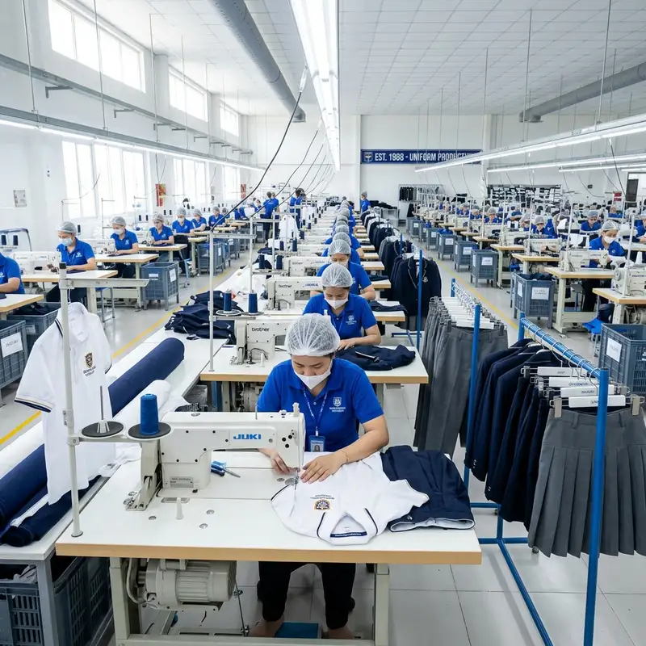
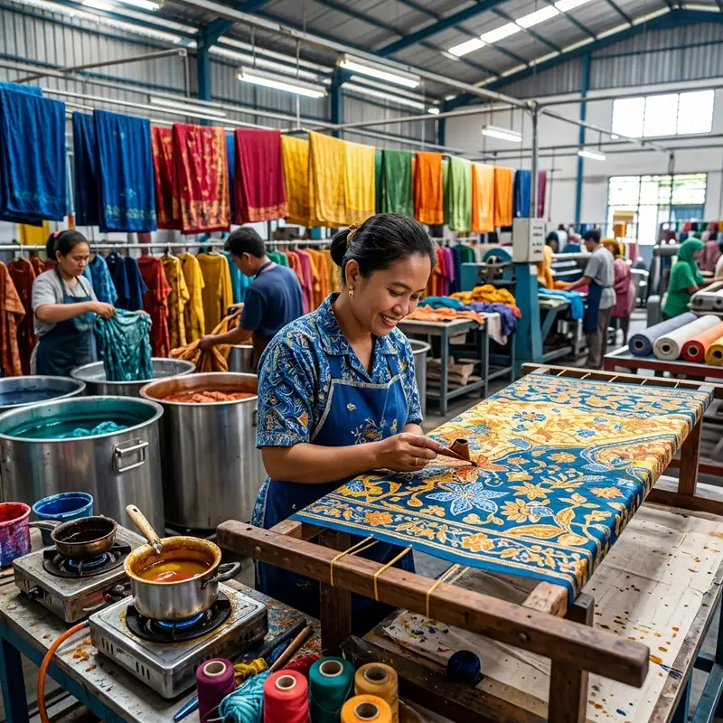
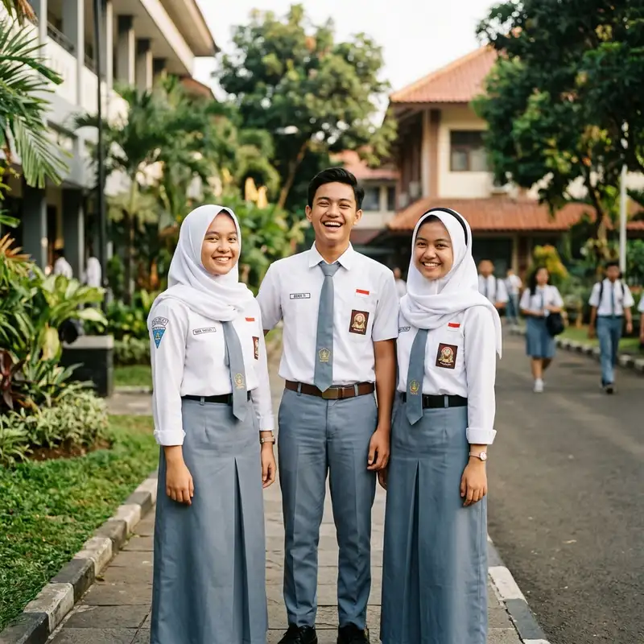
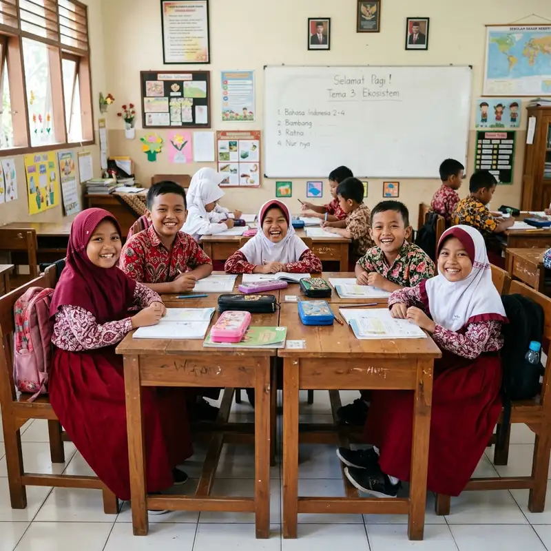
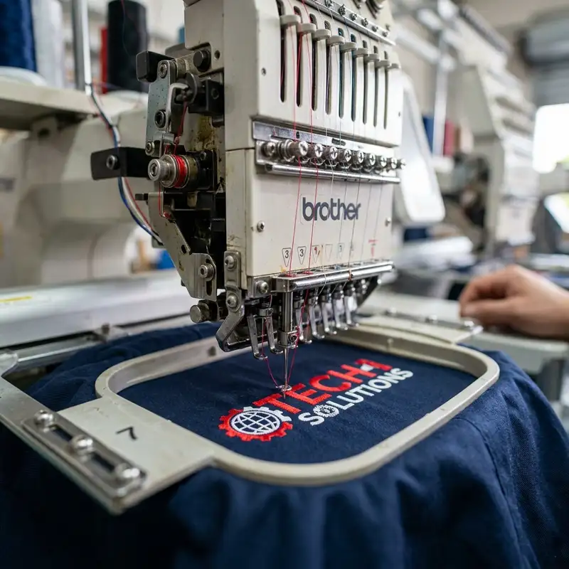
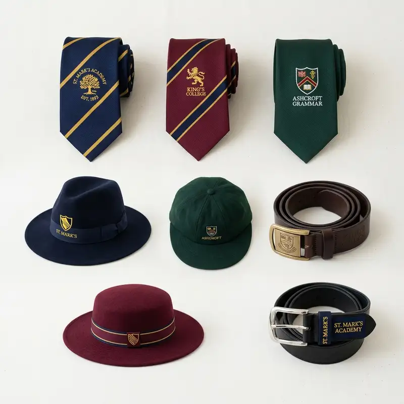
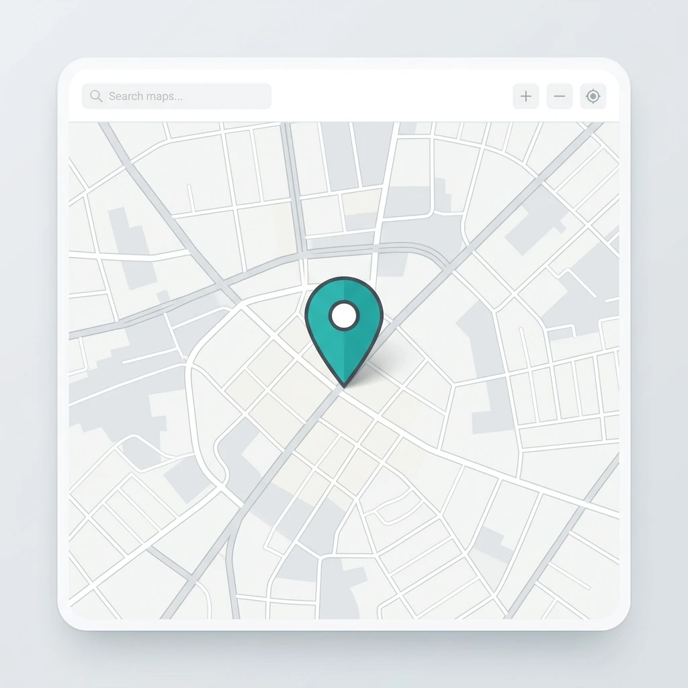

Bikin Seragam Sekolah & Batik Custom Tanpa Ribet. Proses cepat, rapi, dan harga pabrik langsung dari vendor konveksi terpercaya di Banten.


Spesialis pembuatan seragam berkualitas tinggi untuk institusi pendidikan, pondok pesantren, dan industri di seluruh Banten.
Printing motif identitas khusus dengan logo sekolah/yayasan.
Kemeja, jas almamater sekolah, baju koko, dan seragam santri.
Topi sekolah, dasi logo, sabuk/ikat pinggang custom berkualitas.
Jasa bordir komputer presisi tinggi untuk logo identitas massal.
Alur pengadaan seragam instansi Anda di KML dibuat praktis dan transparan.
Hubungi CS kami via WhatsApp, tentukan model, bahan kain, dan total kebutuhan.
Pembuatan sample mockup fisik produk & kesepakatan Down Payment (DP) 50%.
Proses pemotongan bahan, penjahitan massal, dan pembordiran komputer ber-QC ketat.
Setelah produk seragam selesai dikemas rapi, sisa tagihan dilunasi dan barang siap dikirim aman.
Bukti nyata kualitas jahitan konveksi, kerapian hasil bordir komputer, dan ketajaman warna cetak batik.




Pengalaman melayani pengadaan seragam skala besar untuk kawasan industri manufaktur dan lembaga pendidikan boarding school ternama di wilayah Banten.
Informasi seputar kapasitas produksi dan kebijakan pemesanan di Konveksi Mugi Lancar.
Jangan ragu, tim spesialis KML siap berdiskusi langsung mengenai spesifikasi dan kebutuhan seragam Anda.
Tanya via WhatsAppKunjungi langsung pusat konveksi kami di Serang, Banten. Kami siap menyambut Anda untuk melihat sampel bahan dan diskusi produksi.
